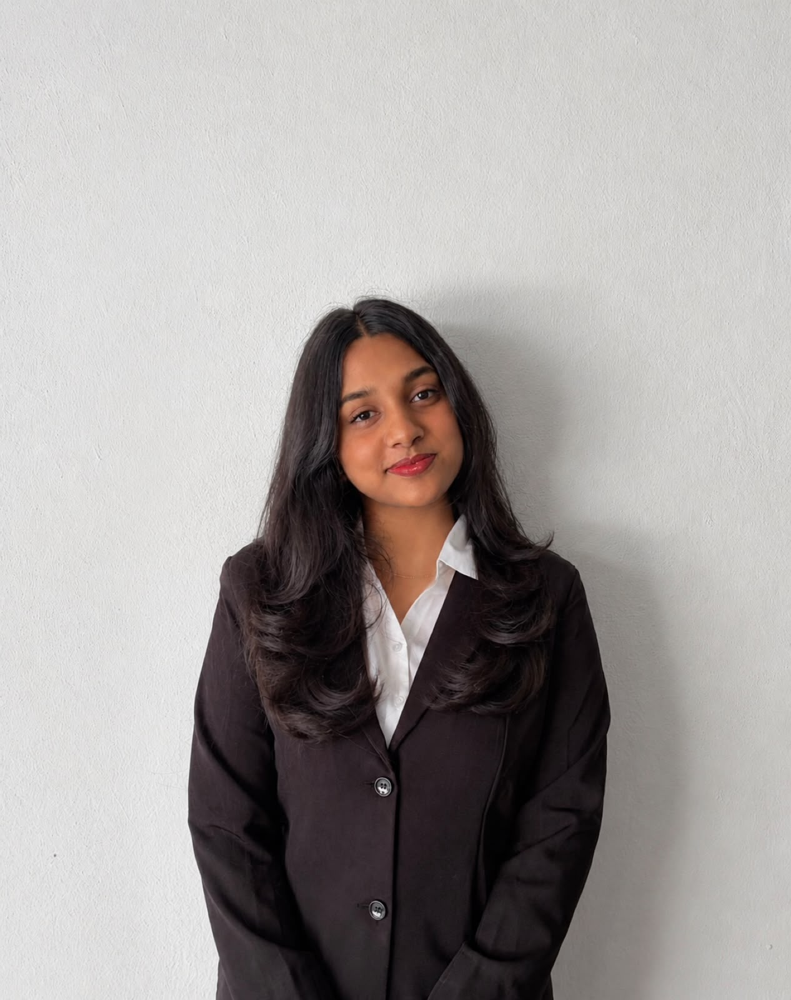

Indian Institute of Management Bangalore
BBA in Digital Business and Entrepreneurship
2026 – Present | Currently Pursuing

Management Student | Curious Learner | Aspiring Professional
I am a first-year Integrated Programme in Management student at NALSAR University of Law, Hyderabad, with a keen interest in business, management and learning new things. I enjoy taking up responsibilities, working with people and participating in academic and extracurricular activities. I believe in continuous learning and making the most of every opportunity.
BBA in Digital Business and Entrepreneurship
2026 – Present | Currently Pursuing
Integrated Programme in Management (BBA + MBA)
2026 – 2031 | Currently Pursuing
Class XII – CBSE | 79.4%
2026
Class X – CBSE | 90.2%
2024
2023 – 2024
2022 – 2024
Department of Management Studies, NALSAR | 2026 – Present
2023 – 2024
Email: hadiyasunil08@gmail.com
Email: hadiyas26@iimb.ac.in
Location: Hyderabad, India